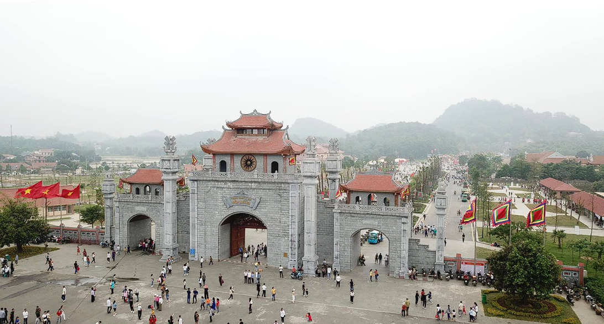
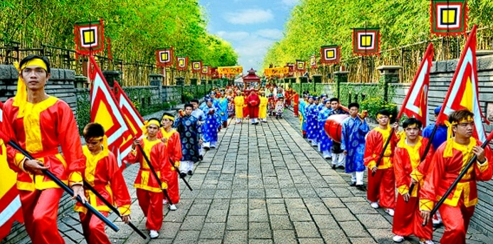
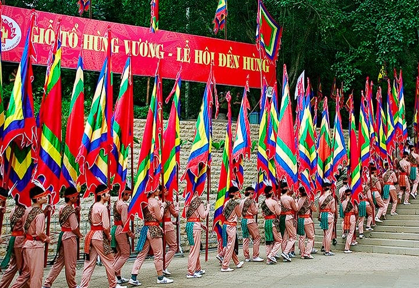
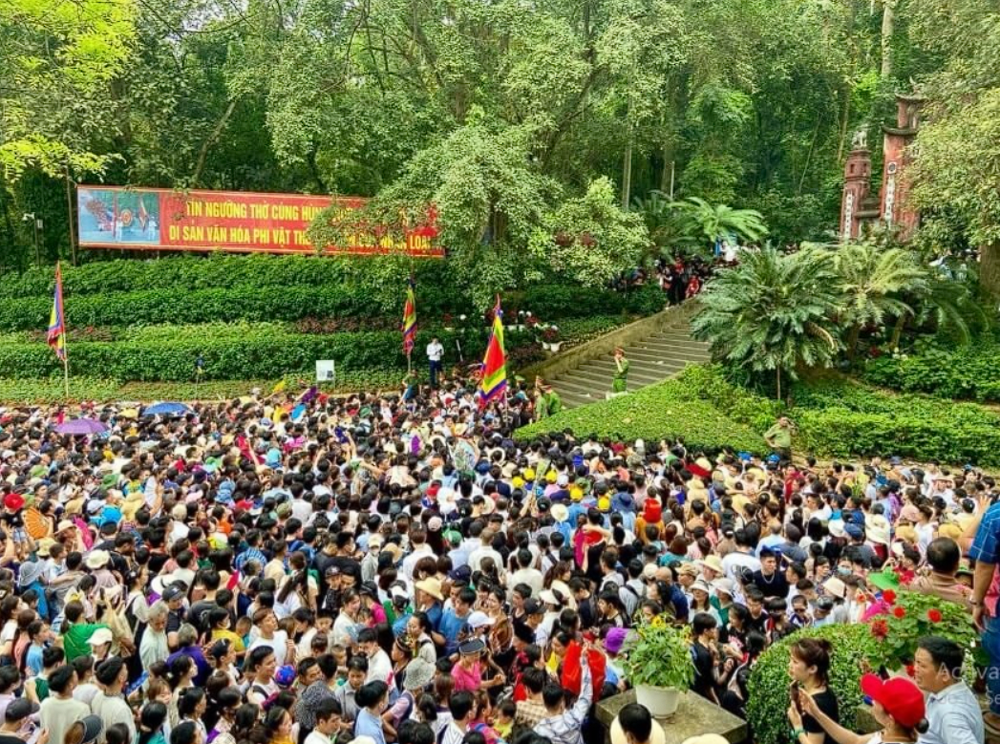

1. Giỗ Tổ Hùng Vương là ngày gì?
Ngày Giỗ Tổ Hùng Vương hay còn gọi là Lễ hội Đền Hùng hoặc tôn xưng là ngày Quốc giỗ là một ngày lễ của Việt Nam. Đây là ngày hội truyền thống của Người Việt tưởng nhớ công lao dựng nước của Hùng Vương. Nghi lễ truyền thống được tổ chức hàng năm vào mùng 10 tháng 3 Âm lịch tại Đền Hùng ở thành phố Việt Trì, tỉnh Phú Thọ và được người dân Việt Nam trên toàn thế giới kỷ niệm và tôn kính. Tín ngưỡng thờ cúng Hùng Vương đã được Bộ Văn hóa, Thể thao và Du lịch Việt Nam ghi danh vào Danh mục di sản văn hóa phi vật thể quốc gia (đợt 1) và UNESCO công nhận là Di sản văn hóa phi vật thể.

Toàn cảnh khu di tích lịch sử Đền Hùng tại Phú Thọ
Ngày Giỗ Tổ Hùng Vương hay Lễ hội Đền Hùng là một ngày lễ lớn của Việt Nam nhằm tưởng nhớ và tỏ lòng biết ơn công lao lập nước của các vua Hùng. Từ năm 2007, ngày mùng 10 tháng 3 Âm lịch chính thức trở thành ngày nghỉ lễ quốc gia.
2. Các hoạt động văn hóa
Lễ hội
Lễ hội diễn ra vào ngày 10 tháng 3 âm lịch,tuy nhiên lễ hội thực chất đã diễn ra từ hàng tuần trước đó và kết thúc vào ngày 10 tháng 3 âm lịchvới lễ rước kiệu và dâng hương trên đền Thượng.
Phần Lễ
Có 2 lễ được cử hành cùng thời điểm ngày chính hội tại đền Hùng:
Lễ rước kiệu vua: Đám rước kiệu, nhiều màu sắc của rất nhiều cờ, hoa, lọng, kiệu, trang phục truyền thống xuất phát từ dưới chân núi rồi lần lượt qua các đền để tới đền Thượng nơi làm lễ dâng hương.
Lễ dâng hương: : Người hành hương tới đền Hùng chủ yếu vì nhu cầu của đời sống tâm linh. Mỗi người đều thắp lên vài nén hương khi tới đất Tổ để nhờ làn khói thơm nói hộ những điều tâm niệm của mình với tổ tiên. Theo quan niệm của người Việt, mỗi nắm đất, gốc cây nơi đây đều linh thiêng và những gốc cây, hốc đá cắm đỏ những chân hương.

Lễ rước kiệu tại đền Hùng
Phần Hội
Phần hội: có nhiều trò chơi dân gian. Đó là những cuộc thi hát xoan (tức hát ghẹo), một hình thức dân ca đặc biệt của Phú Thọ, những cuộc thi vật, thi kéo co, hay thi bơi trải ở ngã ba sông Bạch Hạc, nơi các vua Hùng luyện tập các đoàn thủy binh luyện chiến.
Phần hội năm nay với chủ đề Tuần văn hóa - du lịch đất tổ sẽ đem đến những hoạt động văn hóa, thể thao, du lịch độc đáo như:
- Chương trình nghệ thuật khai mạc với chủ đề “Linh thiêng nguồn cội - Đất tổ Hùng Vương”
- Chương trình nghệ thuật kết hợp pháo hoa tầm cao
- Hội trại văn hóa và trưng bày sản phẩm
- Hội thi làm bánh chưng, bánh giầy
- Chương trình biểu diễn hát xoan làng cổ
- Hoạt động thể thao giải bơi chải Việt Trì mở rộng
- ...
hoạt động phần Hội có mối liên kết chặt chẽ với sự kiện văn hóa, thể thao cũng như du lịch, tất cả tạo thành chuỗi hoạt động Tuần Văn hóa - Du lịch, thu hút một lượng lớn khách tham quan, song song đó còn thể hiện bản sắc văn hóa vùng Đất Tổ.
Phần Hội được tổ chức tại Sân khấu Trung tâm lễ hội - Khu di tích lịch sử Đền Hùng. Người dân sẽ tham gia các hoạt động đầy thú vị và hào hứng trong phần Hội như Liên hoan văn nghệ và dân ca Phú Thọ, Hội trại văn hóa trưng bày, quảng bá và giới thiệu sản phẩm, trình diễn hát Xoan làng cổ, Hội thi bơi chải mở rộng, Hội An .

Hình ảnh đặc sắc mang dấu ấn riêng tại Lễ hội Đền Hùng
3. Kinh nghiệm & lưu ý khi đi Lễ hội Đền Hùng
- Lựa chọn lễ vật phù hợp: Đối với những ai có dự định dâng lễ trong lễ hội để cầu bình an, may mắn thì nên lưu ý lựa chọn lễ vật phù hợp. Ngoài những ý nghĩa đã được giới thiệu, lễ hội Đền Hùng còn đại diện cho ý nguyện về sự phát triển không ngừng của quốc gia. Vì vậy, bên cạnh xôi, thịt gà (hoặc thịt bò, thịt dê), rượu trắng, hoa quả tươi,... bánh chưng (tượng trưng cho Rồng) và bánh dày (tượng trưng cho Tiên) cũng là lễ vật không thể thiếu.
- Đền Hùng ở đâu, cách Hà Nội bao xa? Đền Hùng nằm cách Hà Nội khoảng 90km, cần khoảng 1h30p để di chuyển. Tuy nhiên vào thời điểm lễ hội dòng người đổ về Phú Thọ tăng cao, thời gian di chuyển có thể lâu hơn dự kiến nên bạn cần lưu ý để chủ động thời gian, tránh bỏ lỡ các hoạt động quan trọng.
- Đi lễ hội Đền Hùng ăn gì, ở đâu? Chắc hẳn bạn sẽ dành ít nhất từ nửa ngày cho tới 1 ngày, hoặc lâu hơn để tham quan và tận hưởng trọn vẹn lễ hội. Nếu du khách muốn khám phá khuôn viên Đền Hùng thì có thể lựa chọn các nhà hàng trong khuôn viên di tích. Nếu muốn dành thời gian đi thăm các đền thờ vua thì nên ghé vào thành phố Việt Trì để có nhiều lựa chọn hàng quán và món ăn hơn.
- Đến Đền Hùng, Phú Thọ mua gì về làm quà? Một số món ăn độc đáo của vùng đất Phú Thọ cho du khách làm quà như quả cọ, thịt chua với giá khoảng từ 40.000 đồng, gà nhiều cựa, bánh sắn, xôi ngũ sắc.
Giỗ tổ Hùng Vương năm 2025 là ngày thứ 2, gần cuối tuần nên bạn có thể chủ động sắp xếp thời gian, công việc để tận hưởng dịp nghỉ lễ trọn vẹn, ý nghĩa bên gia đình, người thương bằng chuyến du lịch khám phá các thiên đường du lịch HOT bậc nhất Việt Nam như Nha Trang, Phú Quốc, Hội An, Quảng Ninh, Đà Nẵng,...
Kỳ nghỉ lễ Giỗ Tổ Hùng Vương sắp tới là dịp thích hợp để bạn thực hiện chuyến du lịch cùng với gia đình, bạn bè để xả stress và để chuyến đi được trọn vẹn và hoàn hảo nhất, bạn hãy lựa chọn nghỉ dưỡng, lưu trú tại Vinpear bao gồm: Phú Quốc United Center, Vinpearl Nha Trang, quần thể Vinpearl Nam Hội An, Vinpearl Resort & Spa Hạ Long với hệ sinh thái dịch vụ, tiện ích “All in one” đẳng cấp.
Lễ hội Đền Hùng không chỉ là dịp để người Việt thể hiện sự kính trọng, biết ơn với các vị vua Hùng, mà còn là cơ hội để du khách tìm hiểu và khám phá những giá trị văn hóa truyền thống của đất nước, đề cao tinh thần yêu nước và tôn vinh bản sắc dân tộc.

Phần Đánh Giá Nội Dung
Viết cảm nhận của bạn về trang web này và chúng tôi đánh giá🗿